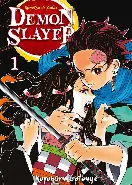

Demon Slayer - Vol. 01
Autor: Koyoharu Gotouge
Em Estoque
R$ 29,90
Sinopse
Tanjiro Kamado encontra sua família atacada por demônios e sua irmã Nezuko transformada em um deles. Ele decide ingressar no Esquadrão de Caçadores de Demônios para salvar sua irmã.